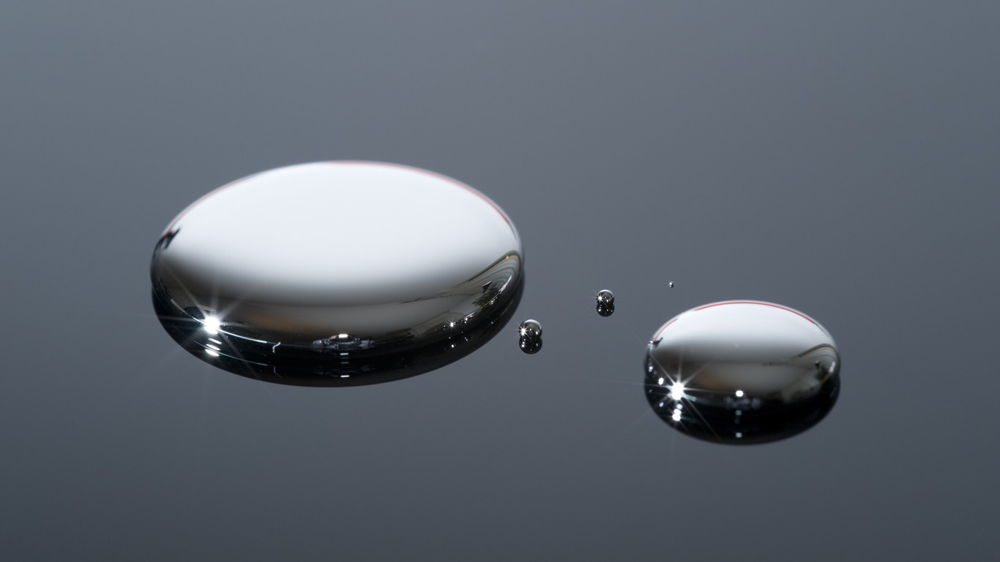

Existem mais bactérias no seu organismo do que pessoas em toda a Terra. São cerca de 100 trilhões de microrganismos vivendo em simbiose no seu corpo.

O mercúrio é o único metal que se mantém em estado líquido sob condições normais de temperatura e pressão.